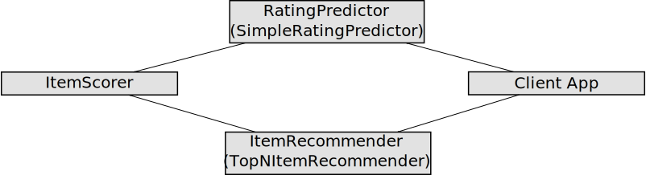

Structure of a Recommender
LensKit recommenders are built out of many different components, each usually defined by an interface that may have many different implementations. Selecting implementations to use is how you pick the algorithm and configuration that LensKit will use.
LensKit has many different interfaces and components, so it can seem a bit hard to know where to get started with designing or implementing a new algorithm. Hopefully this page will clear up a lot of the confusion and help you understand how LensKit thinks about recommendation.
Scoring Items
The heart of most LensKit recommender algorithms is the ItemScorer. If you are trying to implement a new algorithm for LensKit, and it's a traditional score-the-items, pick-the-top-N recommender, you probably want to implement an ItemScorer.
ItemScorers provide user-personalized scores for items. These scores could be anything; they could be predicted ratings, purchase probabilities, TF-IDF cosine similarity between the item and the user's profile, or whatever method the underlying algorithm uses to score algorithms. The only restriction on the output of an item scorer is that higher scores should be ‘better’ in whatever sense the scorer measures.
Predicting Ratings
If you want to present rating predictions to users, you want use a RatingPredictor. Rating predictors are like scorers (in fact, the API is entirely parallel), but their output is predicted ratings in whatever rating scale you use. With the ItemScorer and RatingPredictor interfaces, LensKit breaks the rating prediction task into two pieces. The ItemScorer is responsible for computing some kind of score, and the RatingPredictor maps those scores onto the rating range.
Often, the item scorer's output will be (roughly) predicted ratings, and the rating predictor won't have much work to do. The default rating predictor, SimpleRatingPredictor, just takes the output of an item scorer and clamps it to the rating range (as specified by the PreferenceDomain). This means that algorithms such as OrdRec can be implemented as rating predictors, converting scores from any item scorer on whatever scale that scorer provides on into discrete rating predictions (and in fact, this is exactly how we plan to implement it when we get to it).
If you are implementing a new rating prediction strategy, you still probably want to implement an item scorer rather than a rating predictor, particularly if your innovation is in how to compute the predictions or scores themselves. Only implement a rating predictor if your innovation is in mapping scores to user-visible ratings, or if for some other reason building an item scorer doesn't make sense.
If you have a rating predictor and want to use it as an item scorer, the RatingPredictorItemScorer is a bridge implementation that uses predicted ratings as scores.
Top-N Recommendation
The ItemRecommender interface provides Top-N recommendation. Given a user ID, it produces lists of recommended items.
The default implementation, TopNItemRecommender, just returns the top N items as scored by an ItemScorer. So if you want to build a new Top-N recommender, but your innovation is in the item scoring, you still want to implement an ItemScorer. However, if you want to experiment with different ways of generating recommendation lists, such as topic diversification, then you probably want to create an ItemRecommender.
While the item recommender returns a list, and most implementations order the list in some kind of decreasing order of quality/recommendedness, it is appropriate to implement e.g. a set recommender whose results do not have any intrinsic order as an ItemRecommender. The application you embed it in could take advantage of this, so long as it knows the configured algorithm doesn't return some order that really needs to be maintained for the recommendations to make sense.
Item-Based Scoring and Recommendation
In addition to the user-personalized scores and recommendations provided by ItemScorer and ItemRecommender, LensKit provides ‘item-based’ scorers and recommendations that operate with a (possibly empty) set of reference items. These are useful for providing recommendations targeted to a shopping basket and related-product listings.
The interfaces are:
- ItemBasedItemScorer computes basket-relative item scores.
- [ItemBasedItemRecommender][] computes basket-relative recommendations.
Wiring Up Recommenders
LensKit uses dependency injection to configure its algorithms. This allows algorithms to be very modular and flexible, but means there are quite a few moving parts. Most implementations of the interfaces described in this page depend on additional components defined by further interfaces. These interface implementations can also be selected; this is how you can configure the item-item collaborative filter to operate with different notions of item similarity, for example.
When you read the JavaDoc for a LensKit component, such as ItemItemScorer, you will often see a constructor with the @Inject annotation. This constructor is used by LensKit to instantiate the component, and its parameters are dependencies. These dependencies can often be configured, and implementations of them may have additional dependencies of their own.
Some components, such as ItemItemModel, have a @DefaultProvider annotation. This instructs LensKit that instances of the component can be obtained by first instantiating the specified provider class, then calling its get() method to obtain the actual component instance.
Internal Components
Most LensKit algorithms define additional components that control various aspects of their internal behavior. These can be discovered by exploring the JavaDoc.
One common form of internal component is a model. Many recommenders operate on some kind of precomputed data structure, such as a matrix decomposition or a statistical model, in order to produce scores and recommendations. These models can be shared between multiple instances of the recommender itself; they can also be serialized and stored on disk.
The most common structure for a LensKit recommender has at least the following three components:
- The item scorer that defines the actual scoring logic defined by the recommender.
- The model that contains the precomputed model data.
- The model provider that builds the model class. This is usually implemented as a separate
Providerclass.
Putting It All Together
In most algorithms, the components work together like this (an arrow A → B means A uses B):

Both the rating predictor and the item recommender use the item scorer to generate scores, which they use to produce their respective outputs. If you want to change the algorithm, you change the item scorer.
The configuration in the Getting Started chapter tells LensKit to do the following:
- Use
ItemItemScorer, the item-item collaborative filter, to compute item scores by making it the primary implementation ofItemScorer - Use the
UserMeanItemScorerto compute baseline scores - Use the
ItemMeanRatingItemScoreras the baseline for the user mean scorer, so that the resulting scores are personalized means - Normalize user rating vectors by subtracting the baseline score (personalized mean).
You can use different item scorers for prediction and recommendation, using context-sensitive configuration.
Also, while the default rating predictor and item recommender use an item scorer, you can implement item recommenders and rating predictors that do not use an item scorer if you wish.